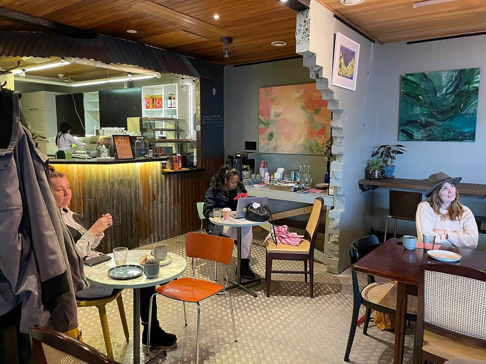

B1 · Work & Career
Software in a Coffee Shop
Five things a small business gets from custom software, and the one it usually gets wrong.
Play the audio and follow along, then read it again on your own. Tap or hover over a highlighted word to see what it means.
A coffee shop looks like the last place that needs a developer. It sells one product in a room with eight tables. In practice a well-run shop is a scheduling problem, a stock problem and a pricing problem at once, and the owner is usually solving all three from memory. Software helps with all of them, though not always in the way the sales pitch suggests.
The most visible change is to the ordering process. A system that connects to the till can streamline how orders are taken — customers order from a tablet or a kiosk, the order arrives at the machine directly, and the queue stops being the limiting factor on a busy morning. That frees the staff to make coffee rather than repeat prices. It also, and this matters more than owners expect, removes the errors that come from somebody shouting an order across a noisy room.


Less visible and more valuable is stock. A system can manage inventory by counting down from each sale: every flat white removes a measured quantity of beans and milk from the running total, and the shop is warned when something is about to run out. The gain is not mainly convenience. It is that a small shop otherwise discovers it has run out of oat milk at half past eight on a Saturday, which costs it sales it never finds out about.
Third, the system can collect data on what is actually sold and when. Most owners believe they already know this and most are partly wrong — people remember the unusual order and forget the ordinary one. The useful discoveries are usually dull: that the pastry case should be filled twice rather than once, that Tuesday afternoons do not pay for the second member of staff, that the expensive single-origin coffee sells in quantities that do not justify the shelf space.
Fourth, the same customer records let the shop create and send promotions to people who have actually been in, which is a different and far cheaper proposition than advertising to a town. And fifth, payments have to be processed securely, which for a small business mostly means not handling card details at all but passing them to somebody whose entire job is doing that safely.
Now the part that goes wrong. Owners buy the system and keep the old habits, so the stock figures drift within a month because somebody takes milk from the fridge without recording it, and after that nobody trusts the numbers and everyone goes back to guessing. The software is only as good as the discipline around it, and that discipline is the actual product being bought.
Used properly, none of this is dramatic on any single day. It shows up as a shop that runs out of things less often, staffs itself closer to its real demand, and knows which half of its menu is paying for the other half.
Key Vocabulary
- sales pitch the argument a seller makes for buying something
- till the machine that records sales and holds the money
- to streamline to make a process simpler and faster
- kiosk a small self-service screen or booth
- limiting factor the one thing that decides how much can be done
- to manage inventory to keep track of what stock a business holds
- running total a figure updated continuously as things are added or removed
- to run out to use up the whole supply of something
- to collect data to gather information systematically
- single-origin coffee from one farm or region rather than a blend
- shelf space the limited room a shop has to display products
- to process to handle a transaction through to completion
- to drift to move gradually away from what is correct
- discipline the habit of doing something consistently and properly
Software in a Coffee Shop — B1 · Work & Career · Renan the Teacher, English Language Academy · https://renangrossi.github.io/englishclasses/reading/b1/coffee-and-it.html
Interactive Exercises
Practice
Complete each exercise, then click Submit to see your score and an explanation for every answer.
Speaking & Writing
Discussion
There are no right answers here — use these to practice speaking, or write a short answer to each.
- “The software is only as good as the discipline around it.” Where have you seen a good system defeated by habits?
- Owners believe they know what sells and are partly wrong. What do you think you know about your own work that the numbers might contradict?
- Is it better for a small business to hold customer data or to avoid holding it wherever possible?
- The useful discoveries are described as dull. Why do people expect data to produce dramatic findings?
- Write about 150 words describing a small business you know and one thing software could genuinely improve about it.